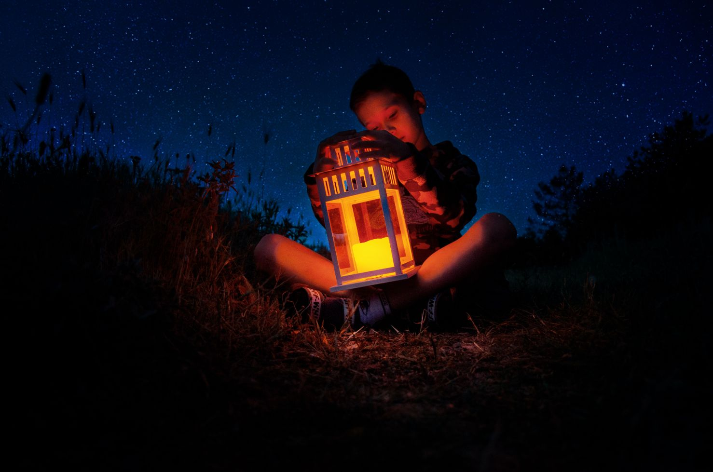

Por qué tomar este curso
La escritura creativa es un oficio y un pasatiempo a menudo tomado con ligereza. Sin embargo, se trata de una actividad que requiere exigencias mentales específicas.En tanto se escribe, la poética de cada autor se revela y con ella se puede reconocer un modo particular de percibir y vivir en una época y un contexto determinado. Los ejercicios de escritura creativa, ayudan a mejorar el uso del vocabulario y el lenguaje. También permiten reflexionar respecto a situaciones personales o hipotéticas; sobre la condición humana y los alcances de la imaginación.
No soy creativo ¿Por qué vale la pena tomar este curso?
La creatividad, no es una cuestión de inspiración o una cualidad que se adquiere por gracia divina. Realmente la creatividad es una actitud para generar una aptitud, al igual que las ciencias o los oficios es algo que requiere práctica y disciplina. Todos manejamos nuestra creatividad en áreas diferentes y podemos potenciarla observando el entorno y aprendiendo de los puntos de vista de muchas personas. En este curso aprenderás a tomar nota de las situaciones que te rodean y aplicarlas a tu forma de pensar y de expresarte. Nos enfocaremos en un tipo particular de escritura creativa y crearemos narraciones cortas. Haremos un recorrido por algunos temas e historias comunes que forman parte de la tradición y la educación sentimental humana. Poco a poco iremos descubriendo que el lenguaje y nuestra actividad observacional nos ayudan a comprender la cotidianidad y a plantear mundos diferentes. En este curso veremos temáticas variadas y lecturas que retratan diferentes épocas: desde los mitos en Grecia y Roma hasta los cuentos para dormir. Poco a poco empezarás a acostumbrarte a crear el hábito de escribir y descubrirás que una vez has iniciado, resulta difícil no caer bajo el hechizo de una narración que te saca de la monotonía y sacude tu mente.